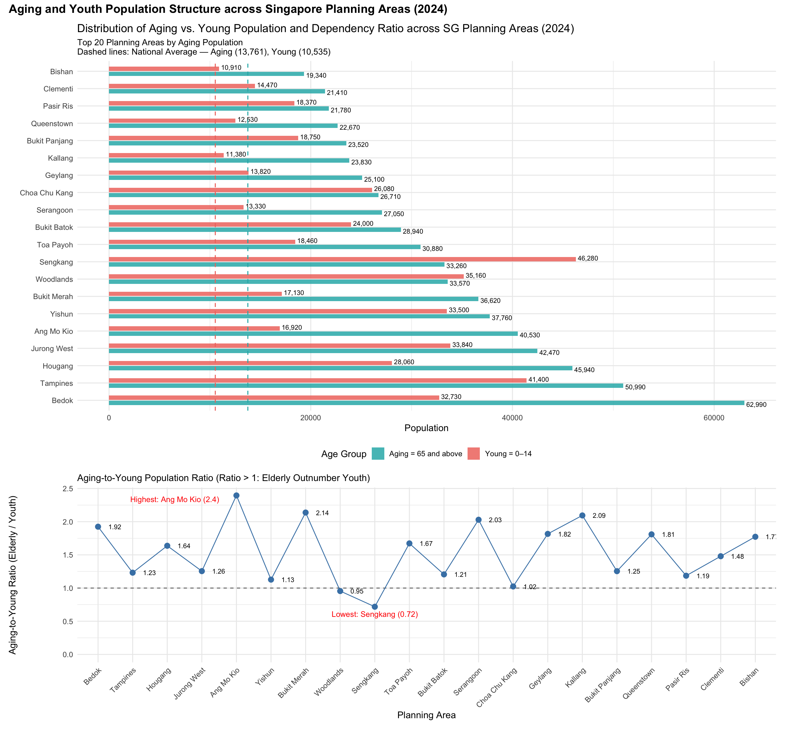

pacman::p_load(tidyverse, ggplot2, dplyr, forcats, ggthemes, patchwork, knitr, gt,scales,gghalves,ggdist,ggforce)Take Home Exercise1B
Data Visualisation Makeover
1.Overview
1.1 Setting the scene
A local online media company that publishes daily content on digital platforms is planning to release an article on demographic structures and distribution of Singapore in 2024.
1.2 Objectives
In this take-home exercise, we are required to:
Selecting one submission provided by our classmate,
critic three good design principles and three areas for further improvement.
With reference to the comment, prepare the makeover version of the data visualisation.
I will use clarity and aesthetics as criteria to comment on my classmate’s work.
1.3 The Original Data Visualisation
The original visualisation can be found in this link
2.Set Up
We will now set up according to the original code provided in the link.
The following packages are used for data wrangling and visualization:
tidyverse: A collection of R packages for data science, includingdplyr,ggplot2, and others for data manipulation and visualization.ggplot2: A grammar of graphics for creating static, animated, and interactive data visualizations.dplyr: Provides a set of functions for efficiently manipulating datasets (e.g., filtering, selecting, and summarising).forcats: Tools for working with categorical variables (factors), especially useful for reordering and relabeling.ggthemes: Offers additional themes and scales to improve the aesthetics ofggplot2charts.patchwork: Enables combining multipleggplot2plots into a single layout.knitr: Facilitates dynamic report generation by weaving R code into documents.gt: Used to create elegant tables for display in HTML or markdown reports.
The following code chunk uses p_load () of pacman packages to check if tidyverse packages are installed and can be called into R.
3 Data Preparation
3.1Loading the dataset
This dataset stores “90_and_Over” as a character value in the Age column, we need to clean and convert it to a numeric value to perform age-based analysis. We use 95 as a conservative numeric replacement.
data <- read_csv("Data/respopagesex2024.csv") %>%
mutate(Age = ifelse(Age == "90_and_Over", "95", Age),
Age = as.numeric(Age)) %>%
drop_na(Age)3.3Duplicate Check
sum(duplicated(data))[1] 03.4Subzone Summary
grouped <- data %>%
select(PA, SZ) %>%
distinct() %>%
arrange(PA, SZ) %>%
group_by(PA) %>%
summarise(Subzones = paste(SZ, collapse = ", "))
grouped %>%
gt() %>%
tab_header(
title = "Planning Areas and Their Subzones"
)The Original Data Visualisation
Visualisation I
Code-Original Plot 1
age_groups <- data %>%
filter(Age <= 14 | Age >= 65) %>%
mutate(group = case_when(
Age <= 14 ~ "Young",
Age >= 65 ~ "Aging"
)) %>%
group_by(PA, group) %>%
summarise(total_pop = sum(Pop), .groups = "drop")
top_pa <- age_groups %>%
group_by(PA) %>%
summarise(total = sum(total_pop)) %>%
arrange(desc(total)) %>%
slice_head(n = 20) # select top 20
top_age_groups <- age_groups %>%
filter(PA %in% top_pa$PA)
# Define the order (e.g. by total population descending)
pa_order <- top_age_groups %>%
group_by(PA) %>%
summarise(total = sum(total_pop)) %>%
arrange(desc(total)) %>%
pull(PA)
# Apply the same factor levels
top_age_groups <- top_age_groups %>%
mutate(PA = factor(PA, levels = pa_order))
ratio_data <- age_groups %>%
filter(PA %in% top_pa$PA) %>%
pivot_wider(names_from = group, values_from = total_pop) %>%
mutate(ratio = Aging / Young) %>%
filter(!is.na(PA)) %>% # Remove NAs
mutate(PA = factor(PA, levels = pa_order))
# Top bar chart
bar_plot <- ggplot(top_age_groups, aes(x = total_pop, y = fct_rev(PA), fill = group)) +
geom_col(position = "dodge") +
labs(x = "Population", y = NULL, fill = "Age Group") +
theme_minimal()
# Bottom line chart with consistent PA order
line_plot <- ggplot(ratio_data, aes(x = PA, y = ratio)) +
geom_point(size = 3, color = "black") +
geom_line(aes(group = 1), color = "black") +
labs(x = "Planning Area", y = "Aging / Young Ratio") +
theme_minimal() +
theme(axis.text.x = element_text(angle = 45, hjust = 1))
# Combine them
(bar_plot / line_plot) + plot_layout(heights = c(2, 1)) +
plot_annotation(title = "Population Distribution and Aging Ratio by Planning Area")The combination of the plots reflect both absolute population numbers and structural proportions by top 20 region.
1.The classmate selected the top 20 most relevant regions to display insights more clearly. In her original population chart, some of the population gaps between regions were so large that it was difficult to interpret the bar values. Focusing on the top 20 regions helps highlight the key areas and improves readability
2.The basic color pairing (red vs. teal) effectively distinguishes the two age groups, allowing readers to quickly understand the meaning without much effort.the basic color pairing (red vs. teal) effectively distinguishes the two age groups, allowing readers to quickly understand the meaning without much effort.
3.Using horizontal bar charts and applying a 45-degree tilt to the labels in the lower chart improves clarity, especially for long region names. While reviewing other classmates’ charts, I noticed that vertical text labels were often hard to read. This layout enhances accessibility and viewer experience.
4.The aging-to-young ratio is a meaningful indicator that reflects the structural skew of the population. It helps identify whether a region is dominated by an aging population or has a relatively younger demographic, providing useful context for planning and policy decisions.
The bar chart:
Clarity:
Ensure correct initial interpretation of the chart:the upper plot would benefit from a clearer title, as the current layout may cause confusion—viewers might initially think the bar chart represents the aging-to-young ratio.
Separates the focus areas and avoids misinterpretation:to improve clarity, it’s advisable to include both a main title and distinct subtitles for the two charts.
Improves user navigation and insight extraction:sorting the bars by total or aging population would enhance readability and help viewers identify key regions more easily.
Provides exact values and supports better comprehension:It would be beneficial to include data labels on the bars.
Makes age group definitions explicit and avoids ambiguity : Add a legend label like: “Aging = 65 and above”.
Aesthetics:
Reduces visual density and makes the plot more digestible:The physical spacing between grouped bars could be adjusted to reduce clutter and improve visual clarity.
Improves inclusivity and visual distinction:Consider enhancing the legend or replacing colors with more accessible alternatives.
Improves user comfort and aesthetic appeal:The colour here is too glaring. We need to adjust the colour depth or transparency to make the plot more comfortable and readable for readers.
The ratio plot
Clarity:
Add a Structural Reference Line: The current chart lacks a visual indicator to help interpret what constitutes a “balanced” aging structure. Adding a horizontal line at y = 1, labeled as “Balanced Ratio” or “1.0 Threshold”, would make it clear that a ratio above 1 indicates the elderly population exceeds the youth population.
Highlight Extreme Values:Certain regions such as Punggol (lowest ratio) and Ang Mo Kio (highest ratio) show significant extremes but are not explicitly emphasized. These key points could be highlighted using different colors or text annotations, such as “Highest: Ang Mo Kio (Ratio = 2.2)”, to draw attention and enhance insight.
Enhance Axis Labels and Styling:The current Y-axis uses plain numeric values (e.g., 0.5 to 2.0) without explanation. It should be relabeled as “Aging-to-Young Ratio (Elderly / Youth)”, and a subtitle like “Ratio above 1.0 indicates elderly outnumber youth” can provide context.
Aesthetics:
- Visual Styling for Reference and Highlights:Replacing the plain black reference line with a blue gradient and using red highlights for extreme points would improve both aesthetic appeal and clarity.
Code-Makeover Plot 2
# Data preprocessing
age_groups <- data %>%
filter(Age <= 14 | Age >= 65) %>%
mutate(group = case_when(
Age <= 14 ~ "Young",
Age >= 65 ~ "Aging"
)) %>%
group_by(PA, group) %>%
summarise(total_pop = sum(Pop), .groups = "drop")
# Sort by elderly population and select the top 20 PAs
top_pa <- age_groups %>%
filter(group == "Aging") %>%
arrange(desc(total_pop)) %>%
slice_head(n = 20) %>%
pull(PA)
# Create top_age_groups
top_age_groups <- age_groups %>%
filter(PA %in% top_pa)
# Sort order: By elderly population
pa_order <- top_age_groups %>%
filter(group == "Aging") %>%
arrange(desc(total_pop)) %>%
pull(PA)
# Apply factor levels for consistent plotting
top_age_groups <- top_age_groups %>%
mutate(PA = factor(PA, levels = pa_order))
# Calculate national averages
avg_pop <- mean(age_groups$total_pop)
avg_aging_pop <- age_groups %>%
filter(group == "Aging") %>%
summarise(mean_pop = mean(total_pop)) %>%
pull(mean_pop)
avg_young_pop <- age_groups %>%
filter(group == "Young") %>%
summarise(mean_pop = mean(total_pop)) %>%
pull(mean_pop)
# Calculate aging-to-young ratio for top PAs
ratio_data <- age_groups %>%
filter(PA %in% top_pa) %>%
pivot_wider(names_from = group, values_from = total_pop) %>%
mutate(ratio = Aging / Young) %>%
filter(!is.na(PA)) %>%
mutate(PA = factor(PA, levels = pa_order))
# Extreme value labels
max_label <- ratio_data %>% slice_max(ratio, n = 1)
min_label <- ratio_data %>% slice_min(ratio, n = 1)
non_extreme <- ratio_data %>%
filter(!(PA %in% c(max_label$PA, min_label$PA)))
# Top Bar Chart
bar_plot <- ggplot(top_age_groups, aes(x = total_pop, y = PA, fill = group)) +
geom_col(position = position_dodge(width = 0.6), width = 0.5, alpha = 0.85) +
geom_text(aes(label = comma(total_pop)),
position = position_dodge(width = 0.9),
hjust = -0.1, size = 3) +
geom_vline(xintercept = avg_aging_pop, linetype = "dashed", color = "#29B4B6", size = 0.6) +
geom_vline(xintercept = avg_young_pop, linetype = "dashed", color = "#F0776D", size = 0.6) +
scale_fill_manual(
values = c("Young" = "#F0776D", "Aging" = "#29B4B6"),
name = "Age Group",
labels = c("Aging = 65 and above", "Young = 0–14")
) +
labs(
x = "Population",
y = NULL,
title = "Distribution of Aging vs. Young Population and Dependency Ratio across SG Planning Areas (2024)",
subtitle = paste0(
"Top 20 Planning Areas by Aging Population\n",
"Dashed lines: National Average — Aging (", comma(round(avg_aging_pop)),
"), Young (", comma(round(avg_young_pop)), ")"
)
) +
theme_minimal(base_size = 12) +
theme(
legend.position = "bottom",
plot.subtitle = element_text(size = 11)
)
# Ratio Plot
line_plot <- ggplot(ratio_data, aes(x = PA, y = ratio)) +
geom_hline(yintercept = 1, linetype = "dashed", color = "grey40") +
geom_line(aes(group = 1), color = "steelblue") +
geom_point(size = 3, color = "steelblue") +
geom_text(data = max_label, aes(label = paste0("Highest: ", PA, " (", round(ratio, 2), ")")),
vjust = -1.2, color = "red", size = 3.5,hjust = 1,
nudge_x = -0.5,nudge_y=-0.2) +
geom_text(data = min_label, aes(label = paste0("Lowest: ", PA, " (", round(ratio, 2), ")")),
vjust = 1.8, color = "red", size = 3.5) +
geom_text(data = non_extreme,
aes(label = round(ratio, 2)),
hjust = 0,nudge_x = 0.3, size = 3, color = "black")+
scale_y_continuous(name = "Aging-to-Young Ratio (Elderly / Youth)", limits = c(0, NA)) +
labs(x = "Planning Area",
subtitle = "Aging-to-Young Population Ratio (Ratio > 1: Elderly Outnumber Youth)") +
theme_minimal(base_size = 12) +
theme(axis.text.x = element_text(angle = 45, hjust = 1))
# Combine plots with improved title
final_plot <- (bar_plot / line_plot) +
plot_layout(heights = c(2, 1)) +
plot_annotation(
title = "Aging and Youth Population Structure across Singapore Planning Areas (2024)",
theme = theme(plot.title = element_text(size = 15, face = "bold"))
)
print(final_plot)
Overall Value to the Reader after improvement
Comparability: Enables direct comparisons between regions vs. national average and elderly vs. youth populations
Sorted structure: Helps highlight priority areas with the highest aging population
Clear information hierarchy: Presents both population distribution (bar chart) and structural insights (aging-to-youth ratio line chart)
If the goal is to inform policy decisions, guide resource allocation, or highlight the severity of aging issues, Improvement Figure which with more information is better suited as the main visualization.
Visualisation I
Code-Original Plot 2
expanded_data <- data %>%
filter(!is.na(PA)) %>%
mutate(Age = ifelse(Age == "90_and_Over", "95", Age),
Age = as.numeric(Age)) %>%
filter(!is.na(Age)) %>%
mutate(PA = str_trim(PA)) %>%
mutate(region_type = case_when(
# Core Central Region
PA %in% c("Downtown Core", "Outram", "Sentosa", "Rochor", "Orchard", "Newton",
"River Valley", "Bukit Timah", "Holland Road", "Tanglin", "Novena", "Thomson") ~ "Core Central Region ",
# Rest of Central Region
PA %in% c("Bishan", "Bukit Merah", "Geylang", "Kallang", "Marine Parade", "Queenstown", "Southern Islands", "Toa Payoh") ~ "Rest of Central Region ",
# North Region
PA %in% c("Central Water Catchment", "Lim Chu Kang", "Mandai", "Sembawang", "Simpang", "Sungei Kadut", "Woodlands", "Yishun") ~ "North Region ",
# North-East Region
PA %in% c("Ang Mo Kio", "Hougang", "North-Eastern Islands", "Punggol", "Seletar",
"Sengkang", "Serangoon") ~ "North-East Region ",
# East Region
PA %in% c("Bedok", "Changi", "Changi Bay", "Paya Lebar", "Pasir Ris", "Tampines") ~ "East Region ",
# West Region
PA %in% c("Bukit Batok", "Bukit Panjang", "Boon Lay", "Pioneer", "Choa Chu Kang", "Clementi", "Jurong East", "Jurong West", "Tengah", "Tuas", "Western Islands", "Western Water Catchment") ~ "West Region ",
TRUE ~ NA_character_
)) %>%
filter(!is.na(region_type)) %>%
uncount(weights = Pop)
p1 <- ggplot(expanded_data, aes(x = region_type, y = Age, fill = region_type)) +
geom_boxplot() +
labs(title = "Age Distribution by Region Type", x = "Region", y = "Age") +
theme_minimal() +
coord_flip()
p2 <- ggplot(expanded_data, aes(x = Age, y = fct_reorder(PA, Age), fill = region_type)) +
geom_boxplot() +
facet_wrap(~ region_type, scales = "free_y") +
labs(
title = "Age Distribution by Planning Area and Region",
x = "Age",
y = "Planning Area"
) +
theme_minimal()
p1 / p2 +
plot_annotation(title = "Overview: Regional and Planning Area Age Distribution")This set of charts aims to present the age structure of the population across different areas of Singapore at both the regional (Region) and planning area (Planning Area) levels.
Clear hierarchical structure display : the data is divided into two levels (Region and Planning Area), helping readers understand the population structure from a macro to a micro perspective.
Consistent color scheme : the same color is used to represent the same region, making it easier for readers to transition from the top chart to the bottom chart (e.g., pink for West Region, green for North Region).
Effective use of space : by arranging the small charts in columns, horizontal space is fully utilized, delivering a large amount of information without appearing cluttered.
Boxplots enhance statistical insight : each boxplot provides information on the median, quartiles, and outliers, making the distribution characteristics of the data clear at a glance.
Strong comparative capability : the top chart allows for horizontal comparison across regions, while the bottom chart supports vertical comparison within regions, enabling multi-dimensional analysis.
Clarity
Improves data richness and interpretability : the current chart type is relatively simple; it can be made more informative by incorporating distribution plots such as density or overlaying median lines.
Helps users understand key metrics at a glance : the boxplots do not explicitly display statistical indicators. Adding a median ect. reference information would improve clarity and interpretability.
Supports intuitive comparison across categories : if the plots are grouped by region, a side-by-side (faceted) layout would enhance cross-regional comparisons.
Aesthetics
Reduces clutter and improves visual balance:the legends can be consolidated—retaining just one main legend would simplify the visual presentation.
Enhances overall design appeal and coherence:The color palette could be optimized by adopting a magazine-style or publication-friendly aesthetic for a more polished and professional look.
Code-Makeover Plot 2
expanded_data <- data %>%
filter(!is.na(PA)) %>%
mutate(Age = ifelse(Age == "90_and_Over", "95", Age),
Age = as.numeric(Age)) %>%
filter(!is.na(Age)) %>%
mutate(PA = str_trim(PA)) %>%
mutate(region_type = case_when(
PA %in% c("Downtown Core", "Outram", "Sentosa", "Rochor", "Orchard", "Newton",
"River Valley", "Bukit Timah", "Holland Road", "Tanglin", "Novena", "Thomson") ~ "Core Central Region",
PA %in% c("Bedok", "Changi", "Changi Bay", "Paya Lebar", "Pasir Ris", "Tampines") ~ "East Region",
PA %in% c("Central Water Catchment", "Lim Chu Kang", "Mandai", "Sembawang", "Simpang", "Sungei Kadut", "Woodlands", "Yishun") ~ "North Region",
PA %in% c("Ang Mo Kio", "Hougang", "North-Eastern Islands", "Punggol", "Seletar", "Sengkang", "Serangoon") ~ "North-East Region",
PA %in% c("Bishan", "Bukit Merah", "Geylang", "Kallang", "Marine Parade", "Queenstown", "Southern Islands", "Toa Payoh") ~ "Rest of Central Region",
PA %in% c("Bukit Batok", "Bukit Panjang", "Boon Lay", "Pioneer", "Choa Chu Kang", "Clementi", "Jurong East", "Jurong West", "Tengah", "Tuas", "Western Islands", "Western Water Catchment") ~ "West Region",
TRUE ~ NA_character_
)) %>%
filter(!is.na(region_type)) %>%
uncount(weights = Pop) %>%
mutate(region_type = factor(region_type, levels = c("Core Central Region","East Region", "North Region","North-East Region","Rest of Central Region","West Region" )))
region_colors <- c(
"Core Central Region" = "#E07B91",
"East Region" = "#D7B45A",
"North Region" = "#60B15A",
"North-East Region" = "#4BC1C1",
"Rest of Central Region" = "#6598EA",
"West Region" = "#DA8AE0"
)
overall_median <- median(expanded_data$Age, na.rm = TRUE)
P4 <- ggplot(expanded_data, aes(x = fct_reorder(PA, Age), y = Age, fill = region_type)) +
geom_boxplot(outlier.size = 0.8, width = 0.6, alpha = 0.6) +
facet_wrap(~ region_type, scales = "free_x", nrow = 1) +
geom_hline(aes(yintercept = overall_median, color = "Median"), linetype = "dashed", linewidth = 0.8) +
labs(title = "Age Distribution by Subzones (2024)", x = "Planning Areas", y = "Age") +
scale_fill_manual(
values = region_colors,
guide = guide_legend(order = 1)
) +
scale_color_manual(
name = NULL,
values = c("Median" = "red"),
labels = paste0("National Median Age = ", overall_median),
guide = guide_legend(order = 2)
) +
theme_minimal(base_size = 11) +
theme(
axis.text.x = element_text(angle = 60, hjust = 0.9, face = "bold"),
legend.position = "bottom",
legend.title = element_blank(),
legend.spacing.x = unit(1.5, "cm"),
legend.text = element_text(size = 10),
legend.box = "horizontal",
panel.spacing = unit(1, "lines")
)
stats <- expanded_data %>%
group_by(region_type) %>%
summarise(
Min = min(Age),
Q1 = quantile(Age, 0.25),
Median = median(Age),
Q3 = quantile(Age, 0.75),
Max = max(Age)
) %>%
pivot_longer(cols = c(Min, Q1, Median, Q3, Max), names_to = "stat", values_to = "value") %>%
mutate(label = paste0(stat, ": ", round(value, 1)))
stats$region_type <- factor(stats$region_type, levels = levels(expanded_data$region_type))
P5 <- ggplot(expanded_data, aes(x = region_type, y = Age, fill = region_type)) +
geom_half_violin(side = "r", alpha = 0.3, color = NA, trim = FALSE) +
geom_boxplot(width = 0.2, outlier.shape = NA, alpha = 0.6) +
geom_text(
data = stats,
aes(x = region_type, y = value, label = label),
inherit.aes = FALSE,
size = 4,
hjust = 1.4
) +
scale_fill_manual(values = region_colors) +
labs(
title = "Age Distribution by Region (2024)",
x= NULL,
y = "Age"
) +
theme_minimal(base_size = 11) +
theme(
legend.position = "none",
axis.text.x = element_blank(),
strip.text = element_blank()
) +
coord_cartesian(clip = "off")
final_plot <- (P5 / P4) +
plot_layout(heights = c(2, 1)) +
plot_annotation(
title = "Age Distribution Across Regions and Planning Areas in Singapore (2024)",
theme = theme(plot.title = element_text(size = 16, face = "bold"))
)
print(final_plot)
Overall Value to the Reader after improvement
Clear understanding of region-to-subregion age structure hierarchy
Easy identification of age distribution shape and spread differences
Immediate recognition of deviation from national norms
Conclusion
After virewing some classmates visualisation,I want to share four key principles to keep in mind to ensure that our visualization is clear, insightful, and effective in communicating data:
Purpose
Every chart should serve a clear purpose. Focus on what we want the viewer to take away—select the appropriate chart type, avoid unnecessary complexity, and emphasize the key insight the chart is meant to reveal.
Clarity & Accuracy
Ensure our chart includes clear titles, well-defined terms, and meaningful reference lines. Metrics should be accurate and relevant, helping viewers understand the data without confusion.
Readability & Insight
Arrange the chart to guide the viewer’s eye—use logical sorting, highlight important values, and ensure adequate spacing. Group comparisons should be easy to follow and visually intuitive.
Aesthetics
Choose a color palette that is visually comfortable and accessible. Maintain layout balance, ensure font clarity, and avoid clutter. Good design not only looks professional but also supports comprehension.